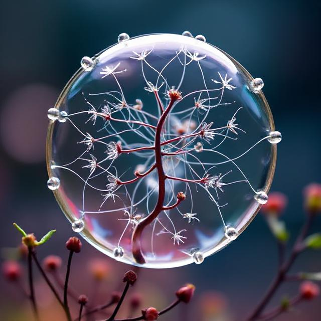

Vlastnosti živých soustav
Živé soustavy, jako jsou buňky rostlin, živočichů, hub a bakterií, jsou složité systémy, jejichž fungování je založeno na chemických procesech. Chemické základy těchto procesů tvoří prvky a sloučeniny, které společně vytvářejí struktury a umožňují metabolické děje nezbytné pro život. Níže si shrneme základní chemické principy živých organismů.
- Biogenní prvky
- makrobiogenní prvky (C, H, O, N, P, S),
- mikrobiogenní prvky (Fe, Mg, Zn, Cu, I...).
- Voda – základní složka
- Polární molekula: umožňuje tvorbu vodíkových vazeb.
- Rozpouštědlo: rozpuštění iontů a molekul, čímž umožňuje chemické reakce.
- Vysoká tepelná kapacita: stabilizuje teplotu organismu.
- Kapilarita a koheze: zajišťuje transport látek v rostlinách.
- Organické sloučeniny v živých organismech
- Sacharidy
- Lipidy
- Proteiny
- Nukleové kyseliny
- Anorganické sloučeniny v živých soustavách
- Chemické reakce v živých organismech
- Katabolismus: rozklad látek spojený s uvolněním energie (např. dýchání).
- Anabolismus: syntéza složitějších molekul za spotřeby energie (např. fotosyntéza).
- ATP (adenosintrifosfát): univerzální molekula pro přenos energie
- Oxidace glukózy: proces uvolňující energii pro syntézu ATP.
Biogenní prvky jsou chemické prvky nezbytné pro stavbu a funkci živých organismů. Dělíme je na
Voda tvoří až 60–70 % hmotnosti většiny organismů. Má unikátní vlastnosti díky své molekulární struktuře:
Živá hmota je tvořena převážně organickými molekulami. Mezi hlavní skupiny patří:
Kromě vody jsou pro fungování organismů důležité ionty (Na⁺, K⁺, Ca²⁺, Cl⁻) a anorganické molekuly, jako je oxid uhličitý (CO₂), kyslík (O₂) nebo minerální soli.
Minerální látky zajišťují pevnost kostí (Ca, P), funkci nervů (Na, K) a enzymovou aktivitu (Mg, Zn).
Metabolismus zahrnuje veškeré chemické reakce probíhající v buňkách. Tyto reakce můžeme rozdělit na:
Hlavní zdroje energie pro život:
Život na Zemi je úzce spjat s chemií. Základem je kombinace organických a anorganických molekul, jejichž vzájemné interakce umožňují stavbu, růst, reprodukci a adaptaci organismů.
Pochopení chemických základů živých soustav je klíčové nejen pro biologii, ale i pro medicínu, ekologii a biotechnologie.
Chemické vlastnosti živých soustav
Živé soustavy se liší od neživých tím, že vykazují určité základní vlastnosti. Tyto vlastnosti společně tvoří složitý systém, ve kterém jednotlivé procesy spolupracují na zachování života.
- Strukturovanost a hierarchie
- Buňka
- Tkáně, orgány, organismus
- Ekosystém
- Metabolismus
- katabolismus,
- anabolismus.
- Reprodukce
- Pohlavní reprodukce
- Nepohlavní reprodukce
- Autoregulace a homeostáza
- Regulace tělesné teploty (termoregulace).
- Udržování optimální hladiny cukru v krvi.
- Růst a vývoj
- Semínko se vyvine v dospělou rostlinu schopnou rozmnožování
- Dráždivost a reakce na podněty
- Rostliny se otáčejí za světlem (fototropismus).
- Živočichové reagují na zvuk, světlo nebo teplotu.
- Adaptace
- Tlusté listy sukulentů pro ukládání vody v suchém prostředí.
- Srst ledního medvěda pro izolaci v chladných oblastech.
- Propojenost a systémovost
- Metabolismus závisí na příjmu živin a autoregulaci
- Růst a reprodukce závisí na energii získané metabolismem.
Živé soustavy jsou organizovány na různých úrovních:

Metabolismus zahrnuje všechny chemické reakce probíhající v organismu.
Tyto procesy jsou rozděleny na
Energetické přeměny jsou klíčové pro růst, pohyb i reprodukci
Všechny živé soustavy jsou schopny reprodukce, což je proces tvorby nových jedinců.
Organismy mají schopnost udržovat stabilní vnitřní prostředí (homeostázu), i když se vnější podmínky mění.
Růst znamená zvětšování velikosti organismu nebo jeho částí, zatímco vývoj zahrnuje změny struktury a funkce během života.
Živé soustavy reagují na změny prostředí.
Adaptace umožňují organismům přežít v měnícím se prostředí.
Všechny vlastnosti živých soustav spolu úzce souvisejí a vytvářejí systém. Například: